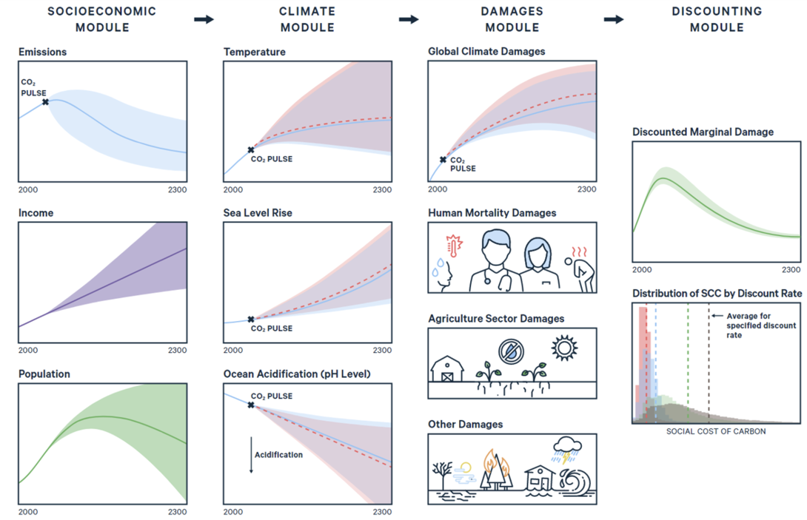
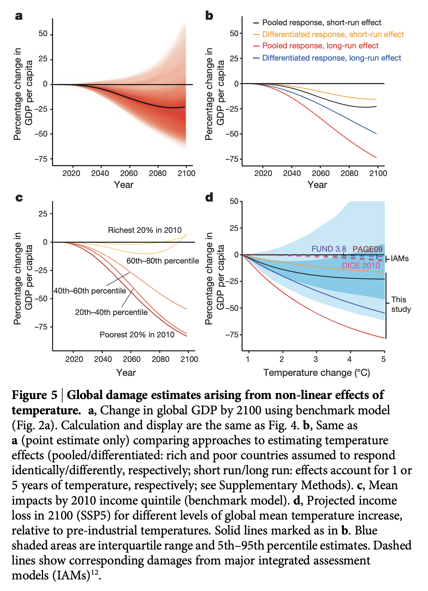
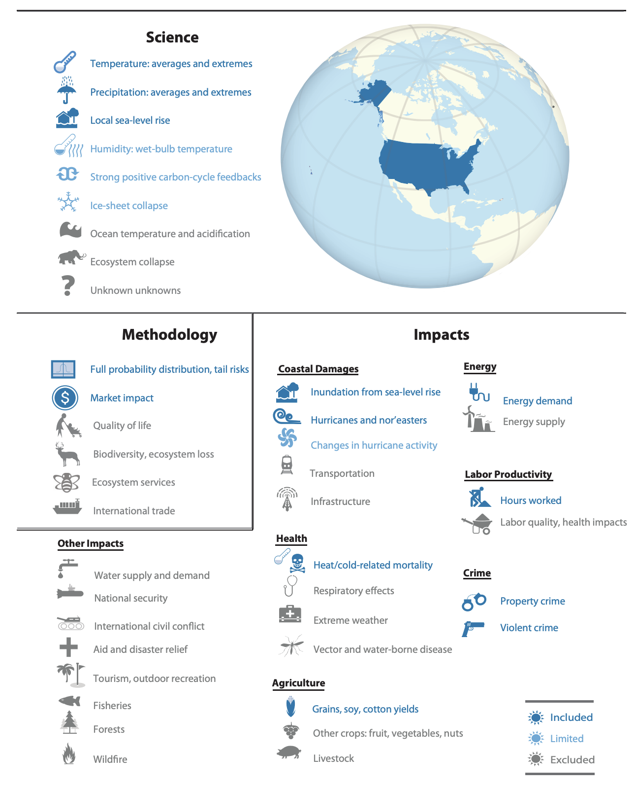
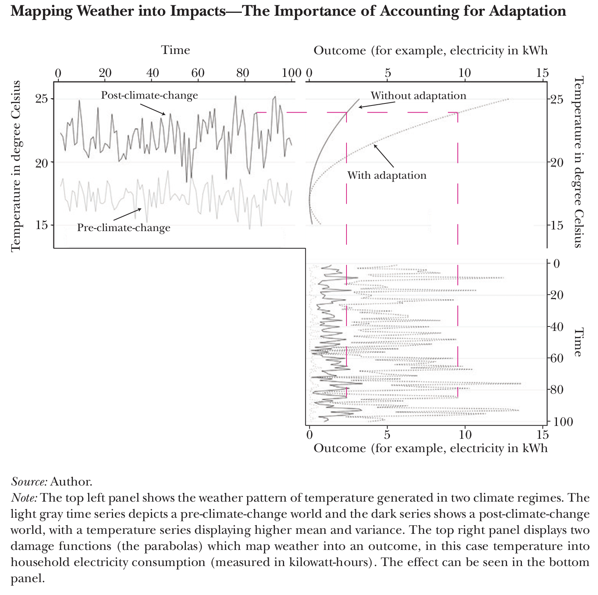
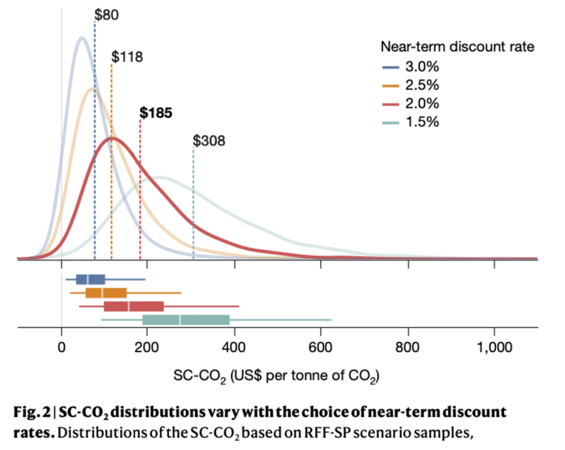

1.6 – can we put a price on climate impacts?
We have established that GHG emissions are a negative externality, so private and social marginal cost curves will differ by an amount known as the marginal external damages of GHG emissions. This divergence results in overconsumption and overproduction of goods and services that generate GHG emissions. But, how do we know by how much the private and social marginal cost curves differ? In other words, how do we know the magnitude of the marginal external damages?
history of the SCC
One might think that it would be obvious to incorporate climate damages into the costs and benefits of federal regulations, but this has not been the case. Here’s a rough history of the SCC as it has been used in federal regulatory policy in the US:
1990s & 2000s: Indepedent researchers develop models to assess the economic costs of climate change.
2008: Federal appeals court ruled that federal agencies must monetize climate-related benefits in regulatory impact analyses (RIAs).
2010: Interagency Working Group (IWG) created to harmonize estimates of the SCC across federal agencies. First systematic SCC estimates provided by the IWG
- \(\implies\) SCC = $26/ton in 2020 at 3% discount rate.
2013-2016: Updates to modeling process leading to revised SCC estimates -
- \(\implies\) SCC = $42/ton in 2020 at 3% discount rate in $2007
Jan. 2017: National Academies of Sciences’ study provides guidance on how the SCC should be updated to reflect the best available science.
Mar. 2017: Trump executive order (EO-13783) disbands IWG. Citing OMB’s Circular A-4, directs agencies to use 7% discount rates and ignore climate damages outside the US.
- \(\implies\) SCC = $1/ton at 7% discount rate
2021: Biden executive order (EO-13990) reverses Trump EO, re-establishes the IWG and previous SCC estimate, and calls for more comprehensive update.
- \(\implies\) SCC = $51/ton in 2020 at 3% discount rate in $2020
2022: Research teams provide updated SCC estimates to reflect best available evidence.
2023: EPA releases updated SCC estimates based on more recent scientific evidence.
- \(\implies\) SCC = $190/ton at 2% discount rate in $2020
how is the SCC calculated?
The SCC is calculated using integrated assessment models (IAMs). IAMs are models that integrate climate science, economics, and other disciplines to project the impacts of climate change and the economic costs of those impacts. IAMs are used to project the SCC because they allow us to project the economic damages that result from climate change. IAMs, like all models, are necessarily simplifications of the real world that are intended to capture key features of the climate and economic systems.

The SCC estimation process is as follows:
- Project GDP, population, and the associated GHG emissions into the future (~300 years). These are called “socioeconomic scenarios” (i.e., different representations of what the world might look like in the future).
- Project changes to the physical climate system resulting from GHG emissions (e.g., changes in temperature, sea-level rise, ocean acidification, etc.).
- Estimate the economic damages that result from climate impacts.
- Discount future damages to the present day.
- Repeat steps 1-4 in a “perturbed” scenario that adds a “\(CO_2\) pulse” into the climate system at a particular point in time.
- Calculate the present value of the difference in total damages between the perturbed and unperturbed scenarios. Rescale estimate to dollars per ton of \(CO_2\). This is an estimate of the SCC.
damage functions
The damage function is a key component of IAMs. The damage function is a mathematical representation of the relationship between climate impacts and economic damages. The damage function is often expressed as a percentage of GDP. For example, a damage function might state that a 1 degree increase in global surface temperature will reduce global GDP by 1%.
An example of a damage function is shown in Figure 2. This damage function is from Burke, Hsiang, and Miguel (2015) and shows the relationship between temperature and GDP per capita. The damage function is estimated using a regression model that relates temperature to GDP per capita. The figure compares the estimated damage function to previous estimates of climate damages from three influential IAMs (DICE, FUND, and Page). Depending on modeling assumptions, what’s included in the model, and so forth, the damage function can vary substantially across IAMs. Naturally, these choices can have a dramatic influence on the SCC.

climate damages
Climate damages span a wide range of sectors and outcomes. Larsen et al. (2015) provide a broad overview of sectors that are likely to be affected by climate change in the US. These sectors are summarized nicely in this figure:

There is not good evidence of the effect of climate change on all sectors due to data availability and the complexity of the climate system. For example, we have reasonably good evidence on how climate change will affect agriculture, energy use, heat-related mortality, and property damage from sea-level rise, at least in developed countries where administrative data permit researchers to estimate these relationships. But, we have less good evidence on how climate change will affect other sectors, such as mental health, conflict, and the distribution of infectious diseases, wildfire risk, tropical cyclones, and so forth.
empirical approach to estimating climate damages
A recent wave of research has focused on how economic outcomes respond to changes in weather, and then they use that estimated relationship to project how those outcomes will change in the future with climate change. This approach is used to estimate weather-response functions. A simplified example of a weather-response function looks like this:
\[ y = f(T) \]
where \(y\) is some economic outcome (e.g., agricultural yields, labor productivity, electricity use, etc.) and \(T\) is some measure of weather (e.g., average temperature), and \(f()\) represents the shape of the relationship between weather and the economic outcome (e.g., electricity use might be quadratic in temperature because people use more electricity when it is very hot and very cold, but less electricity when it is mild).
These econometric weather-response functions can be useful tools to understanding how weather affects economic outcomes. But, there is (somewhat) limited ability for using historical data to understand how society will adapt to climate change. Adaptation would change the shape of \(f()\). If \(y\) is heat-related mortality, then the shape of \(f()\) might change as we society uses more air conditioning. That is, put simply, the relationship between temperature and mortality might be different in the future than it is today.
In Figure 4 below, two representative climates are shown on the left. The weather-response functions for electricity use are shown on the top right. The top panel shows the weather-response function with/without adaptation, while the bottom right panel shows the outcome, electricity consumption, based on different climate scenarios. The figure demonstrates that we can use fluctuations in “pre-climate change” weather to estimate the relationship between temperature and electricity use, this gives us the shape of the quadratic-looking weather-response function in the top right. Then, based on expectations of “post-climate change” weather (top left), we can project how electricity use will change in the future (bottom right). Comparing the outcomes with and without climate change gives us an estimate of the economic damages from climate change.
The challenge is understanding the degree to which the weather-response function will change in the future. With electricity use, we might expect that society will adapt to higher temperatures by using more air conditioning, which would change the shape of the weather-response function (as shown in the top right panel).

We can use some “cross-sectional” comparisons (i.e., giving the US Mexico’s climate) to understand how \(f()\) might change but these comparisons are limited because we cannot control for all of the other differences between the US and Mexico, such as income, culture, etc.
The empirical approach to estimating climate damages is a promising avenue for understanding the economic costs of climate change. But, it is not without limitations and challenges. Many have argued that
Moreover, we can only estimate the relationship between temperature and outcomes for which we have good data. Certain outcomes, including a lot of non-market impacts of climate change, do not have good data precisely because they are not traded in markets.
recent evidence on the magnitude of the SCC

One prominent example of recent estimates of the SCC that reflect the “best available science” are presented in Figure 5. This approach was largely adopted by the US Government to estimate its official SCC. The preferred estimate in Rennert et al. (2022) is $185/ton and uses a 2% discount rate. This estimate is substantially larger than the $51/ton estimate previously used by the federal government. Part of this difference is due to the fact that the new estimate uses a 2% discount rate, while the previous estimate used a 3% discount rate. But, the new estimate also incorporates new evidence on climate damages and updated socioeconomic scenarios. Notably, however, the only damage sectors considered in the Rennert et al. (2022) study are agriculture, energy expenditures, sea-level rise, and heat-related mortality.
resources and further reading
- Social Cost of Carbon Explorer, Resources for the Future.
- EPA Report on the Social Cost of Greenhouse Gases: Estimates Incorporating Recent Scientific Advances, Environmental Protection Agency, 2023.